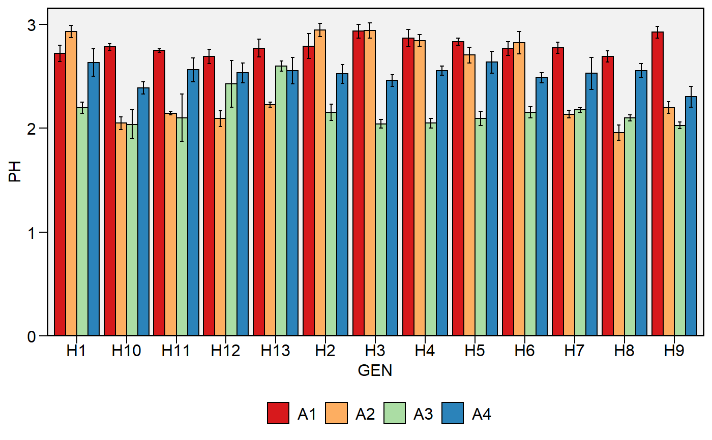
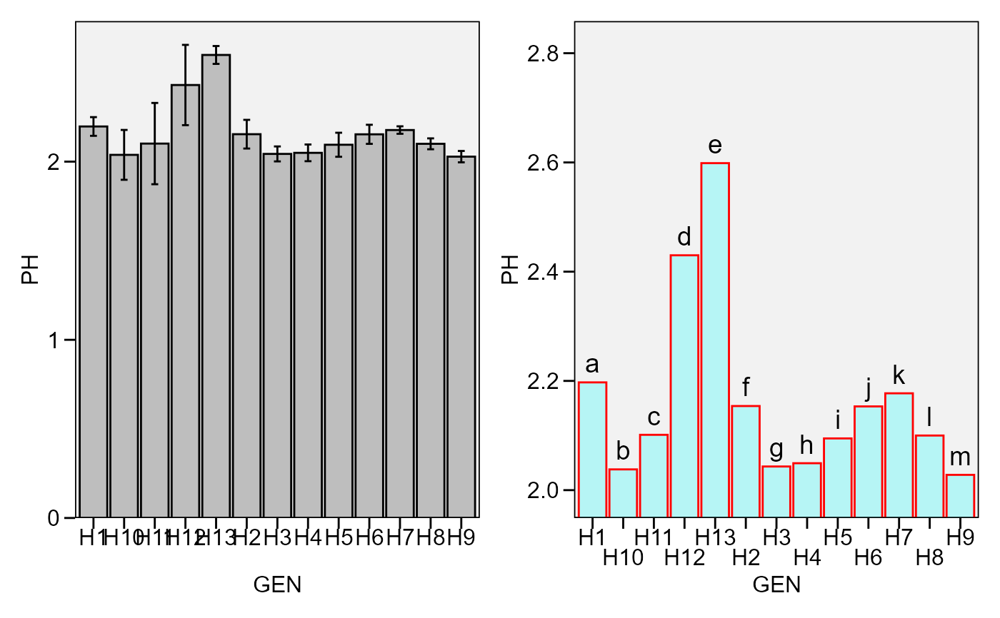

![[Stable]](figures/lifecycle-stable.svg)
plot_bars()Creates a bar plot based on one categorical variable and one numeric variable. It can be used to show the results of a one-way trial with qualitative treatments.plot_factbars()Creates a bar plot based on two categorical variables and one numeric variable. It can be used to show the results of a two-way trial with qualitative-qualitative treatment structure.
plot_bars( .data, x, y, order = NULL, y.lim = NULL, y.breaks = waiver(), y.expand = 0.05, y.contract = 0, xlab = NULL, ylab = NULL, n.dodge = 1, check.overlap = FALSE, color.bar = "black", fill.bar = "gray", lab.bar = NULL, lab.bar.hjust = 0.5, lab.bar.vjust = -0.5, lab.bar.angle = 0, size.text.bar = 5, values = FALSE, values.hjust = 0.5, values.vjust = 1.5, values.angle = 0, values.digits = 2, values.size = 4, lab.x.hjust = 0.5, lab.x.vjust = 1, lab.x.angle = 0, errorbar = TRUE, stat.erbar = "se", width.erbar = NULL, level = 0.95, invert = FALSE, width.bar = 0.9, size.line = 0.5, size.text = 12, fontfam = "sans", na.rm = TRUE, verbose = FALSE, plot_theme = theme_metan() ) plot_factbars( .data, ..., resp, y.lim = NULL, y.breaks = waiver(), y.expand = 0.05, y.contract = 0, xlab = NULL, ylab = NULL, n.dodge = 1, check.overlap = FALSE, lab.bar = NULL, lab.bar.hjust = 0.5, lab.bar.vjust = -0.5, lab.bar.angle = 0, size.text.bar = 5, values = FALSE, values.hjust = 0.5, values.vjust = 1.5, values.angle = 0, values.digits = 2, values.size = 4, lab.x.hjust = 0.5, lab.x.vjust = 1, lab.x.angle = 0, errorbar = TRUE, stat.erbar = "se", width.erbar = NULL, level = 0.95, invert = FALSE, col = TRUE, palette = "Spectral", width.bar = 0.9, legend.position = "bottom", size.line = 0.5, size.text = 12, fontfam = "sans", na.rm = TRUE, verbose = FALSE, plot_theme = theme_metan() )
Arguments
| .data | The data set. |
|---|---|
| x, y | Argument valid for |
| order | Argument valid for |
| y.lim | The range of y axis. Defaults to |
| y.breaks | The breaks to be plotted in the y-axis. Defaults to waiver().
|
| y.expand, y.contract | A multiplication range expansion/contraction
factor. |
| xlab, ylab | The labels of the axes x and y, respectively. Defaults to
|
| n.dodge | The number of rows that should be used to render the x labels. This is useful for displaying labels that would otherwise overlap. |
| check.overlap | Silently remove overlapping labels, (recursively) prioritizing the first, last, and middle labels. |
| color.bar, fill.bar | Argument valid for |
| lab.bar | A vector of characters to show in each bar. Defaults to NULL. |
| lab.bar.hjust, lab.bar.vjust | The horizontal and vertical adjust for the labels in the bar. Defaults to 0.5 and -0.5, respectively. |
| lab.bar.angle | The angle for the labels in the plot. Defaults to 0. Use
in combination with |
| size.text.bar | The size of the text in the bar labels. |
| values | Logical argument. Shows the values in the plot bar?
Defaults to |
| values.hjust, values.vjust | The horizontal and vertical adjust
for the values in the bar. Defaults to 0.5 and 1.5, respectively. If
|
| values.angle | The angle for the labels in the plot. Defaults to 0.
Use in combination with |
| values.digits | The significant digits to show if |
| values.size | The size of the text for values shown in the bars.
Defaults to |
| lab.x.hjust, lab.x.vjust | The horizontal and vertical adjust for the labels in the bar. Defaults to 0.5 and 1, respectively. |
| lab.x.angle | The angle for the labels in x axis. Defaults to 0. Use
in combination with |
| errorbar | Logical argument, set to TRUE. In this case, an error bar is shown. |
| stat.erbar | The statistic to be shown in the errorbar. Must be one of
the |
| width.erbar | The width of the error bar. Defaults to 25% of
|
| level | The confidence level |
| invert | Logical argument. If |
| width.bar | The width of the bars in the graph. Defaults to 0.9. Possible values are in the range 0-1. |
| size.line | The size of the line in the bars. Default to |
| size.text | The size of the text. Default to |
| fontfam | The family of the font text. Defaults to |
| na.rm | Should 'NA' values be removed to compute the statistics? Defaults to true |
| verbose | Logical argument. If TRUE a tibble containing the mean, N, standard deviation, standard error of mean and confidence interval is returned. |
| plot_theme | The graphical theme of the plot. Default is
|
| ... | Argument valid for |
| resp | Argument valid for |
| col | Logical argument valid for |
| palette | Argument valid for |
| legend.position | The position of the legend in the plot. |
Value
An object of class gg, ggplot.
See also
Author
Tiago Olivoto tiagoolivoto@gmail.com
Examples
# \donttest{ library(metan) # two categorical variables plot_factbars(data_ge2, GEN, ENV, resp = PH)# one categorical variable p1 <- plot_bars(data_g, GEN, PH) p2 <- plot_bars(data_g, GEN, PH, n.dodge = 2, # two rows for x labels y.expand = 0.1, # expand y scale y.contract = -0.75, # contract the lower limit errorbar = FALSE, # remove errorbar color.bar = "red", # color of bars fill.bar = alpha_color("cyan", 75), # create a transparent color lab.bar = letters[1:13]) # add labels arrange_ggplot(p1, p2)# }